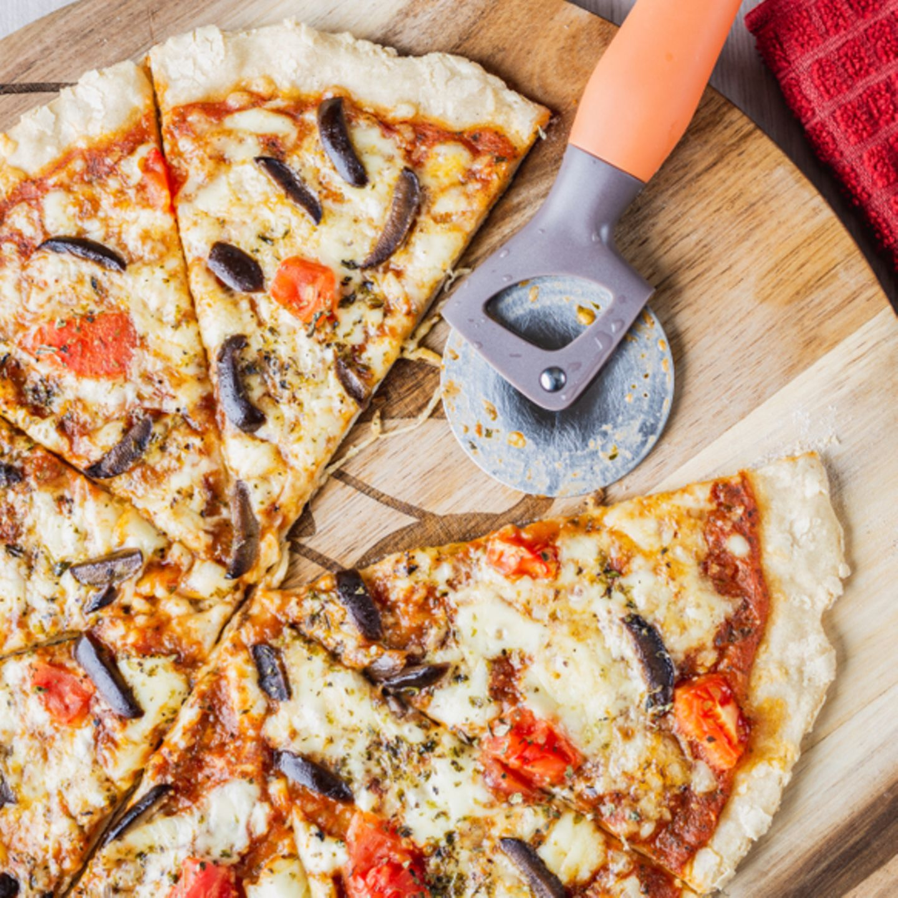

Vegan Pizza

Description
This vegan pizza recipe could be fun for the kids to do for Father's Day. Pizza isn't often considered a light meal, but this vegan option definitely is.
Ingredients
- Half cup water.
- 3 tablespoons flaxseed meal.
- 5 cups cauliflower florets.
- Half cup rolled oats.
- 200 grams vegan mozzarella cheese.
Steps
- Preheat the oven to 450 degrees F (230 degrees C). Line a baking sheet with parchment paper.
- Whisk 1/4 cup water and flaxseed meal together in a large bowl. Let sit for 5 minutes.
- Place a steamer insert into a saucepan and fill with water to just below the bottom of the steamer. Bring water to a boil. Add cauliflower, cover, and steam until fall-apart tender, 3 to 6 minutes. Let cool, at least 10 minutes.
- Grind oats, rosemary, 1/2 teaspoon salt, and 1/4 teaspoon garlic powder together in a food processor until flourlike in texture.
- Place cooled cauliflower in a fine cheesecloth and squeeze out as much moisture as possible. Add pressed cauliflower to the bowl with the flaxseed-water mixture and stir well. Stir in the oat mixture. Form dough into a ball and place onto the lined baking sheet.
- Press dough ball down into a circle. Lay a sheet of parchment on top and roll dough flat using a rolling pin to about 1/4-inch thick.
- Bake in the preheated oven until crust is set, about 15 minutes. Remove from the oven; leave oven on.
- Spread marinara sauce over the cauliflower crust; top with the 'mozzarella cheese' and add cherry tomatoes.
- Bake in the hot oven until sauce is bubbling and crust is golden brown, about 8 minutes. Top with basil.
Back to recipes